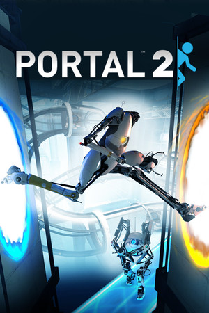
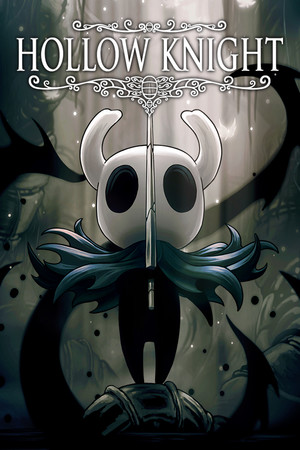
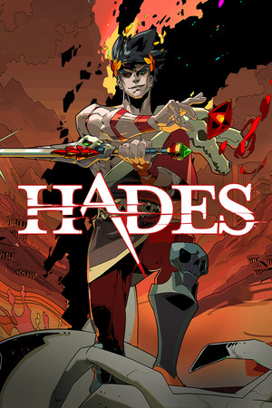

Para ahora. Para luego.
Una lista con lo que estás jugando. Otra con lo que te han recomendado. Y esa que crece cada vez que hay rebajas.
Tu colección de juegos, con memoria.
Ese jefe que te falta. El logro que se resiste.
El juego que dejaste a medias.
Guarda dónde te quedaste y vuelve cuando te apetezca.
No necesitas una cuenta para guardar tus juegos.

Objetivo: completar los logros
 11,5 hTiempo jugado
11,5 hTiempo jugado VisibleSolo amigos
VisibleSolo amigos 90 %
90 %1 de 2 tareas completadas
Me falta el último logro. Preguntarle a Dani si se apunta.
No hace falta terminarlo todo. Ten a mano lo que estás jugando y deja el resto para otro día.
Una lista con lo que estás jugando. Otra con lo que te han recomendado. Y esa que crece cada vez que hay rebajas.
Apunta ese jefe pendiente, el coleccionable que te falta o lo que querías probar. Tu yo de dentro de un mes te lo agradecerá.
Mira tu colección en cuadrícula, repásala en una lista o deja una miniatura en el escritorio de Windows.
Carátulas grandes o una lista al grano. Prueba las tres vistas.

Steam
Objetivo: terminar la historia

Steam
PendienteObjetivo: terminar la historia
Steam
PausadoObjetivo: todos los logros
A veces basta con ver una carátula para acordarte de un juego. Aquí los tienes todos, con su estado y lo que te queda por hacer.
Vista recreada · Colección de ejemplo
Steam
Objetivo: terminar la historia
Steam
PendienteObjetivo: terminar la historia
Steam
PausadoObjetivo: todos los logros
El nombre, el estado y el siguiente objetivo. Todo seguido, para encontrar lo que buscas sin dar vueltas.
Vista recreada · Colección de ejemplo
Deja tu lista en una ventana pequeña mientras haces otras cosas. Tus juegos siguen a mano, sin ocupar todo el escritorio.
Modo miniatura · Disponible en Windows
Vistas recreadas con datos de ejemplo. El tema que elijas se aplica a toda la página.
Vincula Steam para importar tus juegos y consultar los logros. El progreso se actualiza al abrir Checkpoint y periódicamente.
Necesitas tener públicos los datos de juego en Steam.
Añade a tus amigos con su código de Checkpoint y comparte tus avances. Si un juego prefieres guardártelo, puedes hacerlo privado.
Para usar amigos necesitas una cuenta de Checkpoint.
Deja Checkpoint en el escritorio, cambia al modo miniatura y consulta los logros pendientes cuando detecta un juego.
Descargar para WindowsRequisitos y notas de instalaciónEn la web, tu colección se guarda en este navegador. Puedes empezar sin registrarte.
Haz una copia JSON para conservarla o llevarla a otro sitio. La biblioteca privada no se sincroniza automáticamente entre la web y Windows.
Cómo funciona la versión web